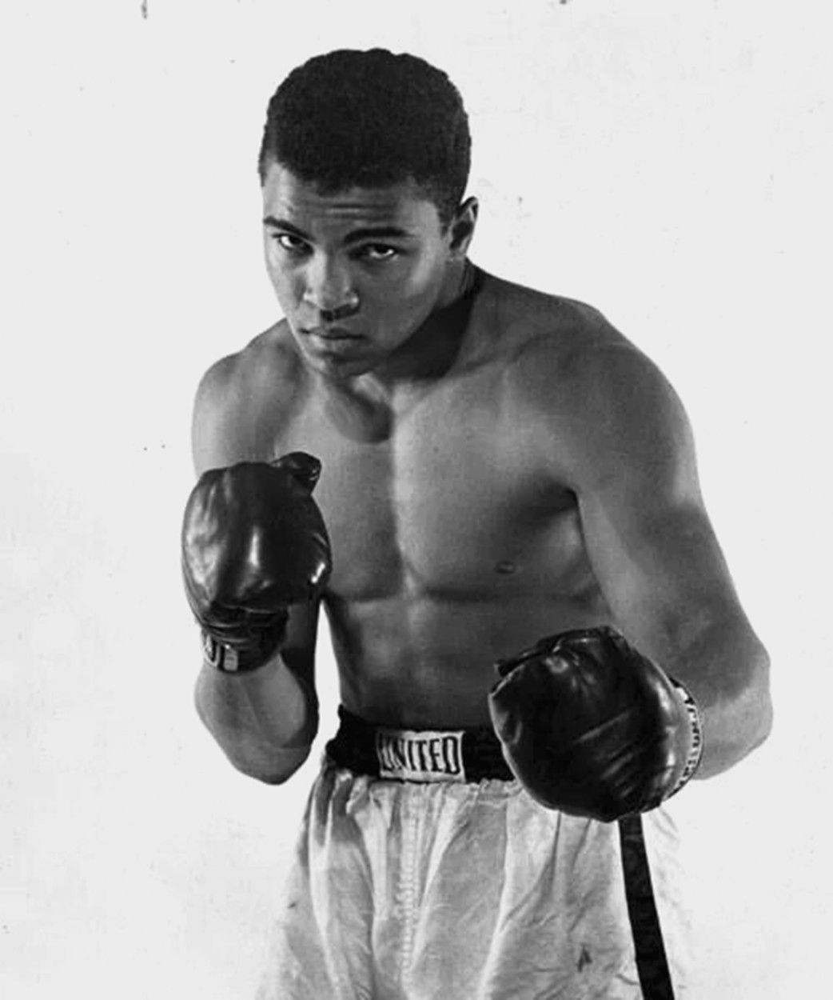
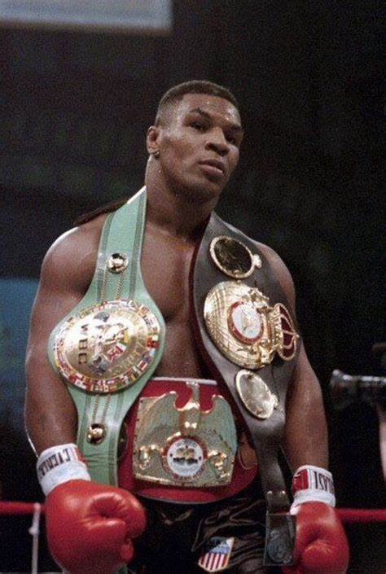
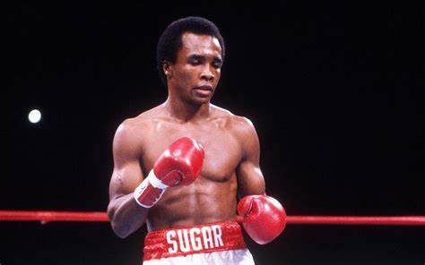

Introduction
This website lists the 10 greatest boxers to ever live. Explore their achievements and contributions to the sport of boxing.
Biographies
Muhammad Ali
Muhammad Ali was an American professional boxer and activist. He is widely regarded as one of the most significant and celebrated sports figures of the 20th century and as one of the greatest boxers of all time.
Mike Tyson
Michael Gerard Tyson is an American former professional boxer who competed from 1985 to 2005. He reigned as the undisputed world heavyweight champion and holds the record as the youngest boxer to win a heavyweight title at 20 years, four months, and 22 days old.
Sugar Ray Leonard
Sugar Ray Leonard is an American former professional boxer, motivational speaker, and occasional actor. He competed from 1977 to 1997, winning world titles in five weight classes, the lineal championship in three weight classes, and the undisputed welterweight title.